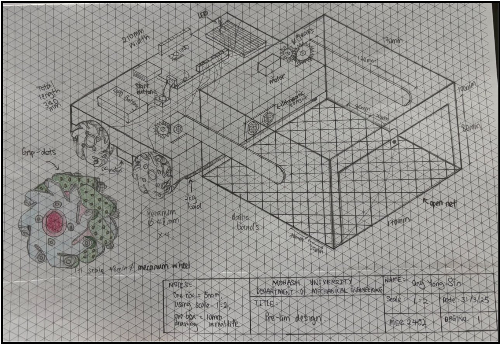
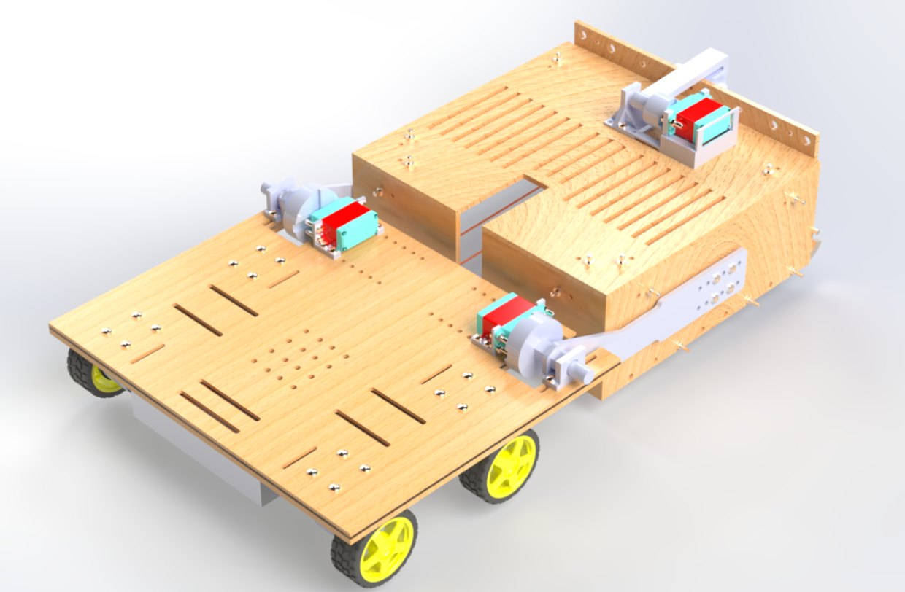
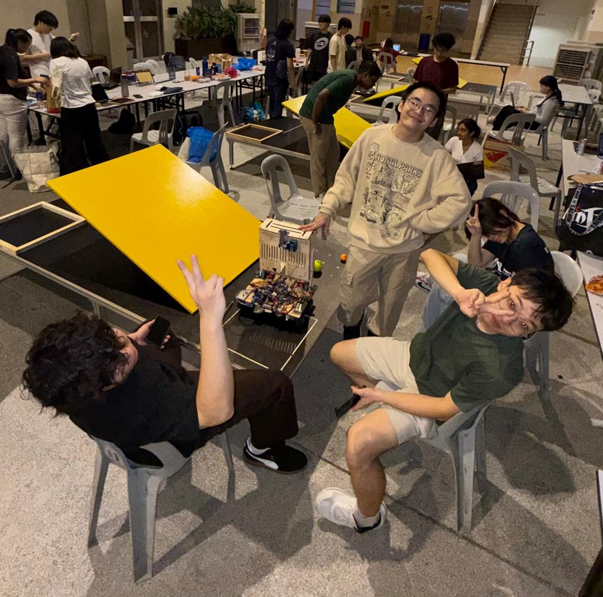

Warman Design & Build Competition
From my initial concept sketch to a competition winning autonomous prototype, this was a collaborative design, fabrication and testing project developed by a team of 4 at Monash University Malaysia.

The challenge: Project SEESAW
The 2025 brief asked teams to build an autonomous device that would collect three different-sized balls from randomly assigned positions and carry them across a course with a seesaw or narrow gaps to a deposit zone. The competition allowed up to 120 seconds per run.
My contribution
- Created the initial concept sketch adopted as the starting point for our team design.
- Worked with teammates on SolidWorks CAD modelling, mechanical and arm design, and prototype refinement.
- Contributed to fabrication, assembly, testing, debugging, idea generation and presentation.
Team approach & outcome
Our four-person team shared responsibilities, collaborated through design decisions and improved the robot through hands-on testing. The project achieved champion status at the Monash University Malaysia intercampus competition.
Tools: SolidWorks, Arduino IDE, wood and acrylic laser cutting, 3D printing, hand tools and electronic components.
Design development


From concept to competition
The video documents the design journey, from sketches and planning to fabrication and the prototype operating during competition runs.
Demonstration video · approximately 1 minute 43 seconds
Team photo
